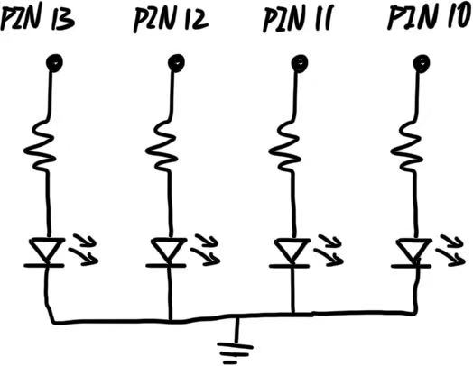

Schematic

This schematic shows the wiring for four LEDs connected to the Arduino.
To ensure each of 4 LEDs be able to blink independently, I used parallel circuit.
Resistance Calculation

With the recommended current of 40 mA for all four colors of LEDs,
I calculated the minimum resistance needed, which is 250 Ohm.
To keep the clarity of the circuit, I used the 330 Ohm's resistants
for each parallel branch.
Firmware
// Assign each LED to its digital pin
int led1 = 13;
int led2 = 12;
int led3 = 11;
int led4 = 10;
void setup() {
// initialize each digital pin as outputs.
pinMode(led1, OUTPUT);
pinMode(led2, OUTPUT);
pinMode(led3, OUTPUT);
pinMode(led4, OUTPUT);
}
// the loop function runs over and over again forever
void loop() {
// Turn LED 1 ON
digitalWrite(led1, HIGH);
// Turn LED 2 ON
digitalWrite(led2, HIGH);
// LED 3 is OFF
digitalWrite(led3, LOW);
// LED 4 is OFF
digitalWrite(led4, LOW);
// wait for a second
delay(1000);
// Turn LED 1 ON
digitalWrite(led1, HIGH);
// LED 2 is OFF
digitalWrite(led2, LOW);
// LED 3 is OFF
digitalWrite(led3, LOW);
// LED 4 is OFF
digitalWrite(led4, LOW);
// wait for a second
delay(1000);
// LED 1 is OFF
digitalWrite(led1, LOW);
// Turn LED 2 ON
digitalWrite(led2, HIGH);
// LED 3 is OFF
digitalWrite(led3, LOW);
// LED 4 is OFF
digitalWrite(led4, LOW);
// wait for a second
delay(1000);
// Turn LED 1 ON
digitalWrite(led1, HIGH);
// LED 2 is OFF
digitalWrite(led2, LOW);
// Turn LED 3 ON
digitalWrite(led3, HIGH);
// LED 4 is OFF
digitalWrite(led4, LOW);
// wait for a second
delay(1000);
// LED 1 is OFF
digitalWrite(led1, LOW);
// LED 2 is OFF
digitalWrite(led2, LOW);
// Turn LED 3 ON
digitalWrite(led3, HIGH);
// LED 4 is OFF
digitalWrite(led4, LOW);
// wait for a second
delay(1000);
// LED 1 is OFF
digitalWrite(led1, LOW);
// LED 2 is OFF
digitalWrite(led2, LOW);
// LED 3 is OFF
digitalWrite(led3, LOW);
// Turn LED 4 ON
digitalWrite(led4, HIGH);
// wait for a second
delay(1000);
// Turn LED 1 ON
digitalWrite(led1, HIGH);
// Turn LED 2 ON
digitalWrite(led2, HIGH);
// Turn LED 3 ON
digitalWrite(led3, HIGH);
// Turn LED 4 ON
digitalWrite(led4, HIGH);
// wait for a second
delay(1000);
// wait for a second before repeating
delay(1000);
}
Question 1

As the LED voltage drop is 2V, while an LED is ON,
the voltage across it stays constant at 2V.
And since this is a parallel circuit, each LED operates independently.
Question 2
The Arduino has 14 pins (0-13), so up to 14 LEDs can be blinked independently.
With the recommended current per pin is 20mA,
14 pins will bring 20*14=280mA.
But since the safe limit of the current for the whole Arduino board is 200mA,
we should limit the current for each branch and make the current draw under 200mA.
Question 3
I don't think there is a delay time that is fast enough to blink LEDs until no longer can tell that they are blinking.
I have tried to adjust the delay time as short as 0.00000000001 ms, but I could still see the blinking.
Question 4
ChatGPT was used to help with content arrangement on the website.
I referenced to the code provided by ChatGPT to arrange the "content block"
for Schematic and Resistance Calculation, to make them side by side
rather than up and down placed.
The CSS code for two-column content from ChatGPT was used.
For reflection, I researched and learnt the defined constent like "align-items"
and "displace." And in the Additional Question section, I tried to write the
code my self to arrange answers to Q1 and Q2 side by side.
I learnt more about the function "div" and "class."
And the codes from ChatGPT was also referenced for the continuing full-width blocks.
I edited and arranged the codes carefully to make the strcutre correct,
which I have moved the full-width-blcok outside the previous content.
And with the graphs attached in a single column, ChatGPT helped me write the codes
to limit the width of specific image.
I also reflected by learning different methods to make images smaller.
And I found out the image will be centered automatically after the size change,
so I used ChatGPT to debug and make the images left-aligned again with CSS codes.
I also used ChatGPT to make the code snippet:
On the HTML, I referred to the codes for adding a firmware section.
I wrote the CSS part myself to make the font smaller and different background color.
And for the Additional Questions,
when answering Question 1, I used ChatGPT to differentiate the difference between
digitalWrite() and analogWrite().
I learnt the concept about PWM-capable pin.
Most importantly, I learnt that even with analogWrite(), the pin is still digital,
so it does not have analog voltage.
But I still need to deepen my understanding towards the digital pins and PWM pins.